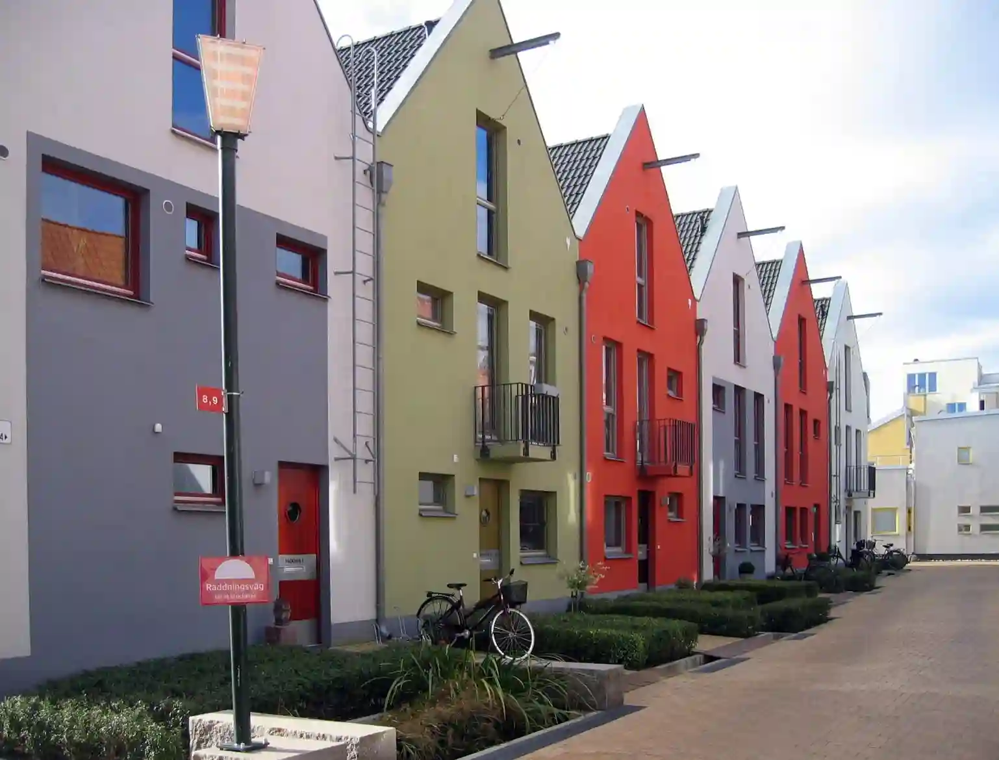

DEL 8
Bråttom

Mia rundade hörnet in mot European Village. Där stod Camilla som hade gjort klart något, något som förmodligen skulle ta henne ett steg närmare sanningen.

Hon såg på Mia med en blick som var spänd och målmedveten. "Jag har hört allt, Mia. Planerna. Jonathan och Vera ska ses där ute på Titanic, vid vattnet." Hon tvekade ett ögonblick, som om hon vägde orden innan hon fortsatte. "Det här är inte bara ett möte. Det är något större. Något de vill gömma undan.
Mia stirrade på henne, försökte förstå vidden av det Camilla sa. Titanic, den övergivna plattformen vid kajen.
Camilla drog en snabb blick över axeln, som om hon förväntade sig att någon skulle ha följt efter henne.
"Jag är redo," sa hon sammanbitet. "Det här slutar i kväll."
Något i hennes ton fick Mia att stelna till. Hon insåg det då Camilla hade inte bara förberett dokument eller bevis. Hon hade förberett sig på allt.
Mia kände instinktivt att något var fel. Hon såg hur Camilla diskret drog jackan tätare om sig, men något stack ut en skymt av metall? En iskall insikt slog henne. Camilla hade ett vapen. Mia behövde agera snabbt. Hon behövde bevisa för sig själv och för Camilla vad som höll på att hända innan det var för sent. Men Camilla var redan på väg bort, raska steg mot vattenkanten, driven av en plan hon inte tänkte överge.
Mia såg hur Camilla försvann längre bort i skuggorna, mot vattnet. Paniken spred sig i hennes bröst. Hon visste vad som stod på spel, inte bara sanningen, utan även Camillas framtid. Om Camilla gjorde det hon verkade ha bestämt sig för, skulle det inte gå att ta tillbaka.
Hon måste stoppa henne.
Mia började springa. Fötterna slog hårt mot gatstenarna, varje steg drevs av ren instinkt. Tankarna rusade: Hur skulle hon hinna ifatt? Vad skulle hon säga för att få Camilla att lyssna?
Kanske behövde hon inte bara ropa på henne, kanske behövde hon visa något, något som kunde bryta igenom beslutsamheten. Men vad? Hon hade bara några sekunder att tänka.

Spelmekaniken för denna del är under pågående arbete. För att komma vidare, skriv koden "nästa" i inputfältet.